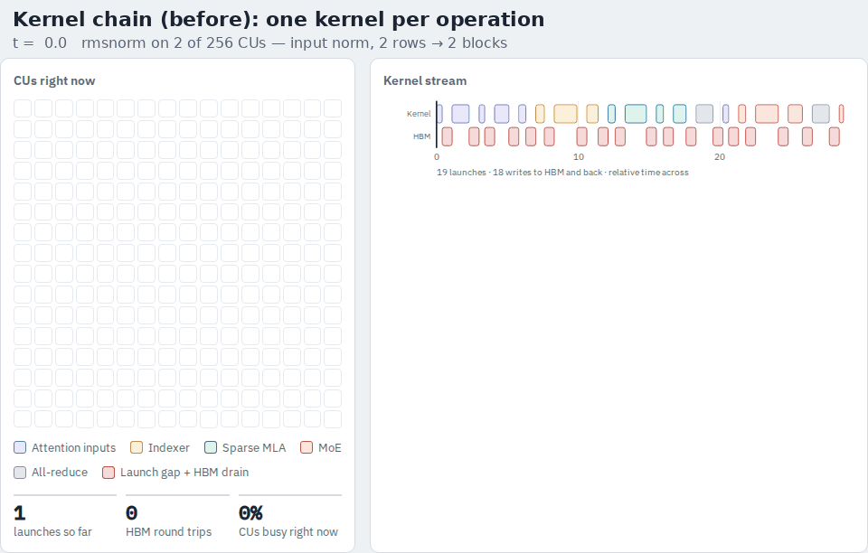
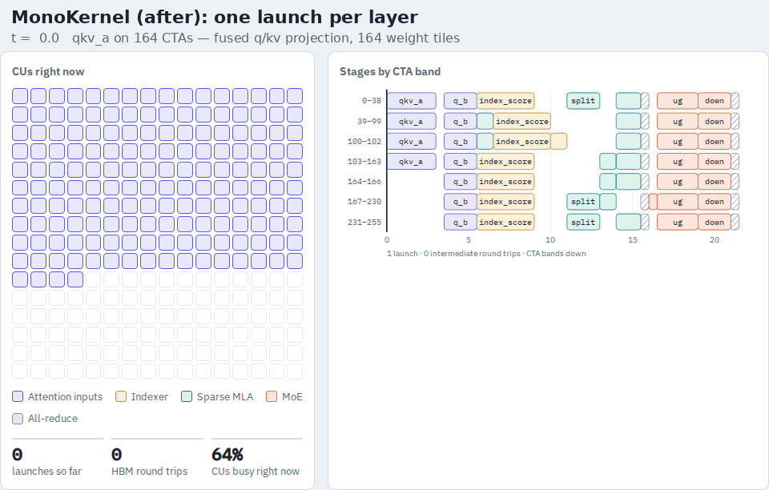

MonoKernel: the short version
Seven questions and their answers. The full explainer has the animations, tables and the worked q_b example behind each of these.
What is the issue at low concurrency, low context?
We are launch bound: the launch and drain time of each kernel is bigger than the time to transfer the weights and inputs and do the computation.
At decode with 1–8 tokens, one GLM-5 layer used to be about nineteen kernels. Each one is launched, fills the GPU, writes its result to HBM, and ends. The useful part of each kernel, streaming a few MB of weights and doing a few MFLOP of math, takes well under a microsecond. The fixed cost around it is several microseconds. So the chip spends most of its time between kernels, not in them.
What to do if you are launch bound? Fuse, then use waves to hide latency
Two different problems, two different tools.
- Launch cost is removed by fusing: one launch per layer instead of nineteen. Nothing inside a kernel can hide a launch gap; only not launching does.
- Memory latency (hundreds of cycles per HBM load) is hidden by keeping other work in flight. A SIMD can hold several resident waves, each with its own program state, and switch between them for free. While one wave waits for its data, another computes.
| Time → | |||
|---|---|---|---|
| Wave 1 | load data | compute | load next |
| Wave 2 | load data | compute |
The MonoKernel runs 2 waves per SIMD, 8 per CU. That's low occupancy on purpose. Resident waves that are not computing still hold their registers, so more waves means fewer registers each. We trade for the minimum occupancy that still hides latency, and make up the rest with ILP inside each wave: every wave issues its weight loads before it waits for its inputs, so the loads overlap the wait. See AMD's occupancy math guide for the budget arithmetic, and section 03 of the full page for how it applies here.
Why are we limited to 12 tokens?
Physical limits of LDS, registers and waves.
- A SIMD holds at most 8 waves; a CU at most 32.
- The MFMA tile is 16 columns wide, so one accumulator naturally carries up to 16 rows (tokens). That would allow 16.
- Each CU has 160 KB of LDS.
In the MonoKernel, LDS holds the inputs of the current stage and the processed tile that goes to the next mailbox. The weights are streamed from HBM straight into registers and never touch LDS. So the LDS footprint scales with rows × input width, not with weight size.
For GLM-5 the widest input is the layer's hidden state, 6144 wide in bf16, staged by the first stage (qkv_a):
| Rows | Input staged in LDS (rows × 6144 × 2 B) | Fits in 160 KB? |
|---|---|---|
| 8 | 96 KB | yes |
| 12 | 144 KB | yes, just |
| 16 | 192 KB | no |
So the kernel asserts S ≤ 12, and vLLM uses 1, 2, 4 and 8. Sixteen is reachable by staging that one input in two halves, since each wave only reads its own K-slice; it's the smallest next step.
How does the MonoKernel use waves? Every CU and every wave does the same kind of work
- The layers run one after another, one launch each.
- Each layer is written as stages, and each stage is a list of tasks spread over the 256 CUs: task
truns on CTA(base + t) mod 256. A stage with 256 tasks is one task per CU; a stage with 1,920 tasks is 7–8 per CU. - We write the code at the CTA level, for all 8 waves of a CU at once: 2 waves per SIMD × 4 SIMDs × 64 lanes = 512 threads. Inside a task, the waves split the K dimension of the weight between them and combine through LDS.
| Helper | What it does |
|---|---|
u_<stage> | Issue the weight loads from HBM for one unit of this wave's work (1 KB tile per wave). No math. |
hint_wait, poll | Wait until the input mailbox carries this launch's tag. |
stage_x | Copy the input rows from the mailbox into LDS. |
run_units, mma_units | Run the GEMM on the matrix cores (and the point-wise ops around it). |
reduce_rows | Combine the 8 waves' partial sums through LDS. |
emit_out, put_bf | Finished tile goes to LDS, then into the next mailbox with the tag. |
This is the same skeleton for seven of the fourteen stages. The q_b walkthrough goes line by line.
How does a MonoKernel differ from normal code?
Watch the two GIFs. Same layer, same time scale.


- Normal code: the kernel ending is the barrier, and HBM is the hand-off. Registers and LDS die with each kernel.
- MonoKernel: one resident grid, no grid barrier, point-to-point waits on tagged mailboxes, intermediates kept in LDS and L2, weights streamed from HBM once.
The interactive version with a scrubber is in section 04.
What is a mailbox? How does it schedule the LDS reads and writes?
A mailbox is a named slice of a scratch buffer in global memory, one allocation made once per runtime. Each slot is 8 bytes: a value and a tag. The tag is this launch's epoch, step × launches_per_step + layer + 1.
- Writer: one 8-byte store of
(value, tag). Readers can never see a new tag with an old value. - Reader: load the pair, compare the tag to its own epoch. Match → fresh. Else sleep briefly and reload. Bounded: after
POLL_LIMITretries it marks a fail-stop instead of hanging. - No reset between layers or steps. Old values carry old tags, so every layer can share one scratch buffer, and CUDA-graph replay needs no clearing kernel. Only the step counter in device memory changes between replays.
How it sequences the LDS traffic inside a task:
- Each wave issues its weight loads (HBM → registers). Nothing touches LDS yet.
- Wave 0 polls the input mailbox; a barrier releases the other 7 waves when the tag matches.
- All 512 threads copy the input rows from the mailbox into LDS (
xs). One global read, eight consumers. - Each wave reads its 32-k slice of
xsper MFMA, keeps its accumulator in registers. - Each wave writes its partial into LDS (
red); barrier; threads sum the 8 partials into LDS (outs). - Threads write
outsinto the next mailbox as tagged pairs. The downstream CTAs, already spinning in step 2, wake up.
Think of it as a pigeonhole wall: numbered boxes, each with a date stamp; you read a box only if the date is today. The names (q_an, q_nope, …) are labels painted on sections of the wall at compile time; at run time it's just addresses.
Sample cases
7.1 How to write a GEMM-type stage
Every projection (qkv_a, q_b, uk, uv, o, down) follows this shape. Shown for q_b, 4096 weight rows → 256 tasks of 16 rows:
for t in range(start("q_b"), N_QB, G): # G = 256; my tasks: t, t+256, …
def u_qb(c): # unit c of this wave
kc = (wave * QB_UNITS + c) * 2 # which 64-k chunk
return unit_fp8x2(w, scale, t, kc, …) # issue 2 × 1 KB loads + scale
pre = [u_qb(c) for c in range(QB_UNITS)] # loads in flight FIRST
hint_wait(mb("q_an")) # then wait for the input
stage_x_pairs(mb("q_an")) # mailbox rows → LDS xs
acc = run_units(u_qb, pre) # mfma_f32_16x16x32_bf16 × 4 per unit
reduce_rows(acc) # 8 waves' partials → LDS outs
emit_out(...) # RoPE on the pe rows
put_bf(mb("q_nope") or mb("q_pe"), tag) # tagged pairs for the next stage
Per wave: 2 units × 4 MFMAs, each MFMA a 16 × 32 weight tile times a 32 × 16 input tile (only S columns real). K is split across waves, not rows, because 16 is the MFMA's minimum height.
7.2 How to write the indexer layer
The sparse indexer is three stages, and only the first is a plain GEMM:
index_q: the index-query projection. At TP4 it has no tasks of its own: its 256 tiles ride on theq_bCTAs, reusing the normalised tile already in LDS.index_score, 1,920 tasks: score every past token. The B operand isn't a staged activation but the fp8 index cache, read per key through the block table. So it callsrocdl.mfmadirectly instead ofmma_units, and writes one fp32 score per token per row intomb("index_scores")(the one mailbox that grows with context).index_select, 2 tasks: pick the top-2048 per row. No GEMM. A 12-bit histogram of the scores in LDS with atomic adds, a prefix scan to find the digit holding the 2048th largest key, then a full radix pass only if that bucket overflows. The winners go tomb("indices")and back to vLLM'spaged_kv_indices, so the following non-indexer layers reuse them.
The split attention stage then gathers those 2048 keys per row from the KV cache and does QKᵀ and softmax·V in 32 key-splits, also with direct MFMA calls.
7.3 How to write the TP all-reduce
Two stages end in a cross-GPU sum: o and down. There is no RCCL call. At startup each rank allocates a symmetric buffer, exports it with hipIpcGetMemHandle, and swaps handles over all_gather_object, so every rank can write directly into every other rank's copy. Then, in peer_reduce:
# 1. push: one wave per destination rank
if wave < W: # W = TP size
put_bf(peer[wave] + region, (rank*S + s)*HIDDEN + row, [v0, v1], CM_SYS)
gpu.barrier()
# 2. pull: poll my own slots, one per source rank, until all carry this tag
parts = poll([(own + region, ((src*S + s)*HIDDEN + row)//2) for src in range(W)])
# 3. sum in fixed rank order 0..W-1, add the residual, emit
total = residual + parts[0] + parts[1] + … + parts[W-1]
One-shot push plus an ordered local reduction: a single round of communication, no separate sync kernel, and bit-identical results on every rank because the sum order is fixed. The stores use the sc0 sc1 (system) cache scope so they're visible across GPUs. The peer buffer is 2 copies × W slots × (S × 6144 × 8 B) per region: 1.5 MB at TP4 with 2 rows.